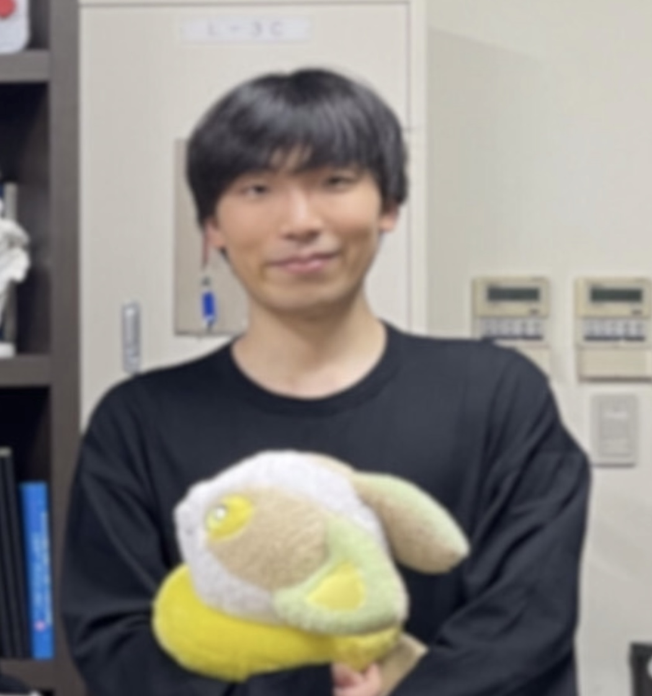
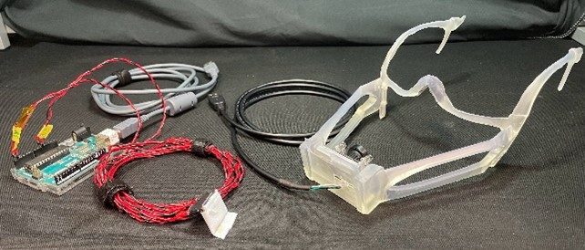
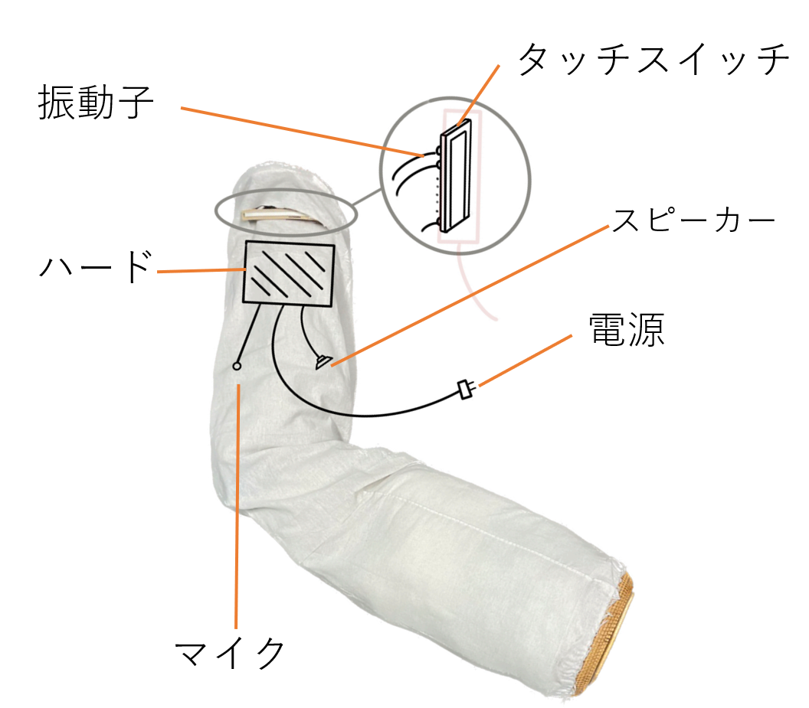
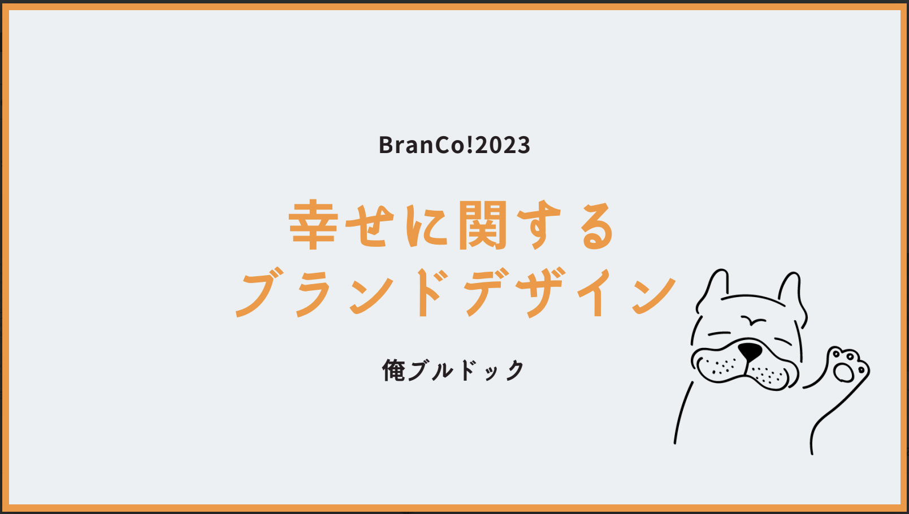
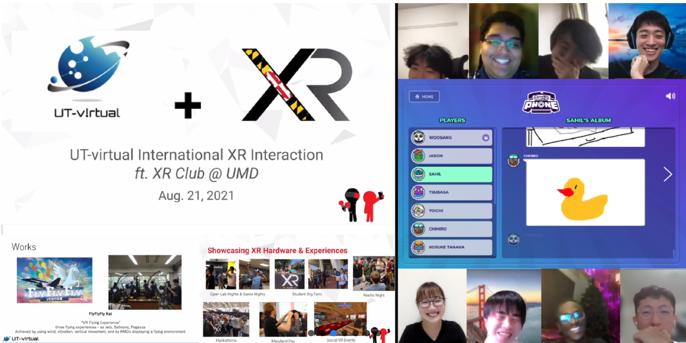

An Exploratory Study of Chewing-Synchronized Intraoral Electrotactile Stimulation for Modulating Texture-Related Perception During Mastication
Woosang Kim, Sho Sakurai, Koichi Hirota, and Takuya Nojima
IEEE Transactions on Haptics
Haptics · Human–Computer Interaction
I am a spatial data scientist with a research background in human–computer interaction and haptics.
I currently work at NTT DOCOMO, analyzing geospatial population data and supporting infrastructure operations for Mobile Spatial Statistics.
My broader research interests include multisensory interaction, intraoral interfaces, electrotactile stimulation, sensing, and virtual and mixed reality.
I received my M.Eng. in Informatics from the University of Electro-Communications (UEC) in March 2026. My research explored how electrical stimulation inside the mouth can evoke tactile sensations and influence food texture perception.
During a research internship at the University of Chicago, I also worked on electrical stimulation of the nasal trigeminal system.

An Exploratory Study of Chewing-Synchronized Intraoral Electrotactile Stimulation for Modulating Texture-Related Perception During Mastication
Woosang Kim, Sho Sakurai, Koichi Hirota, and Takuya Nojima
IEEE Transactions on Haptics
Characterizing Gingival Electrical Stimulation Toward Intraoral Texture Display
Woosang Kim, Sho Sakurai, Koichi Hirota, and Takuya Nojima
IEEE VR 2026 · Poster · VRW · Daegu, Republic of Korea
Investigation of Transcutaneous Electrical Stimulation to Periodontal Ligament Receptors and the Oral Sensory Information Generated
Woosang Kim, Sho Sakurai, Koichi Hirota, and Takuya Nojima
The Virtual Reality Society of Japan, SIG Haptics · Miyagi, Japan · 2023
Investigation of Oral Sensory Information for Selective Stimulation of Periodontal Ligament Receptors
Woosang Kim, Shiori Iwahama, Sho Sakurai, Koichi Hirota, and Takuya Nojima
The Virtual Reality Society of Japan · Tokyo, Japan · 2023

Co-led hardware development, programming, and project management for a mouth-movement interface. Received the Aflac award at U☆PoC in 2023.
View project →
A musical pillow combining touch and pressure input, sound, and vibration feedback.
View project →
Explored experiences of happiness through interviews and life-history mapping, contributing to project management and brand concept development.
View project →
Organized an exchange with the University of Maryland XR Club and developed VR projects showcased at CIC Tokyo.
View activity →Technical: Python, C, Processing, Git, Unity, Arduino/ESP32, KiCad, Fusion 360, and 3D printing.
Languages: Korean (native), Japanese (fluent), English (advanced).